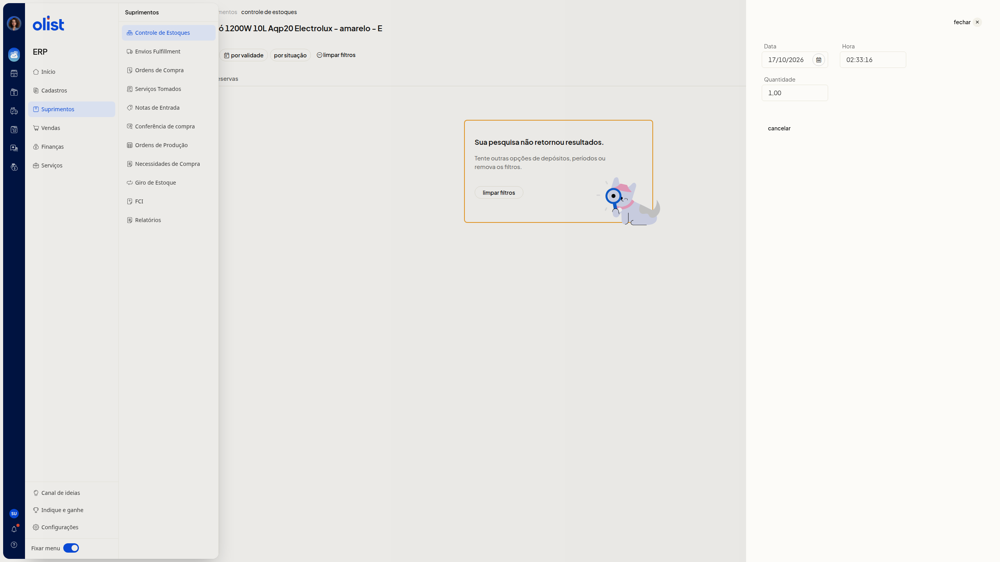

Controle de lotes e validades de produtos
Descrição
No ERP da Olist, você consulta o lote e a validade do produto na aba Lotes e validades, no detalhe de estoque. Acesse Início > Suprimentos > Controle de Estoques e abra o produto.
O lote e a validade não são informados no painel Lançamento de estoque, aberto por Incluir lançamento. Nesse painel, os campos são Tipo, Data, Hora, Quantidade, Preço unitário e Observações. Não há item de lotes no menu Suprimentos nem colunas de lote ou de validade na lista.
Pré-requisitos
- Permissão de estoque para acessar o Controle de Estoques.
- A aba Lotes e validades é desbloqueada com upgrade do plano quando o recurso não está ativo na empresa.
- A aba Lotes e validades é liberada ao contratar a extensão quando o recurso não está ativo na empresa.
Instruções
-
Acesse Início > Suprimentos > Controle de Estoques.
-
Abra o detalhe de estoque do produto.
-
Acesse a aba Lotes e validades.
-
Filtre por validade ou por situação. Os dois filtros não são obrigatórios. por validade filtra um período da Data de validade e tem a opção sem filtro. por situação oferece Sem filtro, Disponível, Reservado e Lançado. Para remover os filtros, acione limpar filtros. Se a pesquisa não retornar resultados, a tela exibe Sua pesquisa não retornou resultados e sugere outras opções de depósitos, de períodos ou remover os filtros.

Perguntas frequentes
Como liberar a aba Lotes e validades?
A aba Lotes e validades é desbloqueada com upgrade do plano quando o recurso não está ativo na empresa. Ela é liberada ao contratar a extensão quando o recurso não está ativo na empresa.
O que fazer se a pesquisa não retornar resultados?
A tela exibe Sua pesquisa não retornou resultados e sugere outras opções de depósitos, de períodos ou remover os filtros.
Links relacionados
Se a aba não aparecer depois de conferir o plano e a extensão, fale com o suporte.